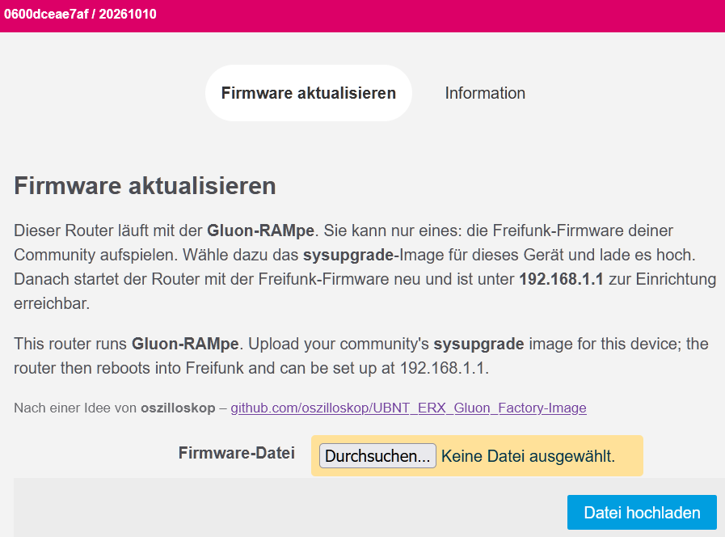
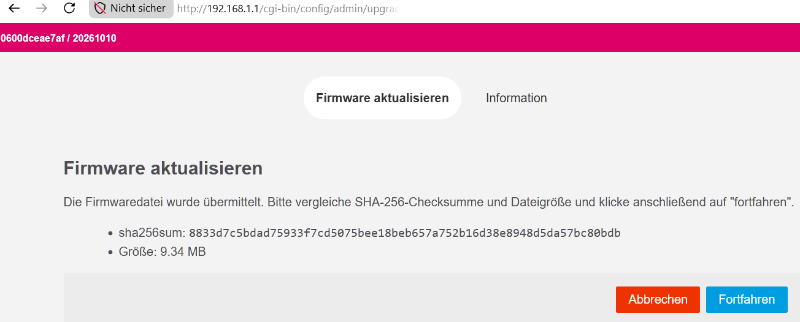

Noch nicht am Gerät erprobt. Wichtige Schritte haben wir von ähnlichen Geräten oder aus dem OpenWrt-Wiki übernommen. Es sollte so klappen, aber sei aufmerksam und hör auf, wenn etwas anders aussieht als hier beschrieben.
Probier es aus und schreib uns, ob es geklappt hat. Und wenn es irgendwo hakt: Melde dich, wir helfen dir weiter. Jede Rückmeldung macht die Anleitung für alle nach dir besser:
Der Bootloader von AVM nimmt in den ersten Sekunden nach dem Einschalten Verbindungen per FTP an (Der Bootloader von AVM (EVA)). Darüber kommt zuerst die Gluon-RAMpe in den Arbeitsspeicher: eine kleine Firmware, die nur eins kann, nämlich die Freifunk-Firmware deiner Community annehmen. Die lädst du dann im Browser hoch.
Die Freifunk-Firmware von Gluon kennt die 3390 nicht von Haus aus; Neanderfunk baut sie mit einer eigenen Ergänzung. Andere Communities haben meist kein Image dafür. Frag im Zweifel deine Community.
Rechner vorbereiten. Feste Adresse 192.168.178.10, Netzmaske
255.255.255.0 (Feste IP-Adresse einstellen).
WLAN am Rechner aus. Leg eva_ramboot.py und die RAMpe in einen Ordner und
öffne dort ein Terminal.
Verbinden. Kabel vom Rechner an eine LAN-Buchse der Box, wenn vorhanden über einen einfachen Switch.
Den richtigen Firmware-Speicher wählen. Die Box hat zwei Speicher für die Firmware. Damit die Freifunk-Firmware später auch startet, muss der erste gewählt sein. Strom an der Box ziehen, wieder einstecken und sofort:
python3 -c "from ftplib import FTP; f=FTP('192.168.178.1','adam2','adam2'); print(f.sendcmd('SETENV linux_fs_start 0'))"
Kommt eine Fehlermeldung, war das Zeitfenster vorbei: Strom ziehen und
noch einmal. Geklappt hat es, wenn eine Antwort mit 200 kommt.
RAMpe laden. Strom an der Box noch einmal ziehen, wieder einstecken und nach wenigen Sekunden:
python3 eva_ramboot.py 192.168.178.1 gluon-rampe-20261015-avm-fritz-box-3390-initramfs-kernel.bin
Das Programm zeigt, was es mit der Box bespricht, und endet von selbst. Kommt eine Fehlermeldung, Strom ziehen und noch einmal.
Die RAMpe. Die Box startet jetzt die RAMpe aus dem Arbeitsspeicher. Stell den Rechner auf
"automatisch" und öffne nach etwa einer Minute http://192.168.1.1. Es
erscheint die Seite "Firmware aktualisieren".

Die RAMpe läuft nur im Arbeitsspeicher. Geht der Strom aus, ist sie weg: dann wieder ab Schritt 4.
Freifunk-Firmware hochladen. Wähl das sysupgrade-Image deiner Community und klick "Datei hochladen". Die RAMpe zeigt die Prüfsumme (SHA256); vergleich sie mit der Angabe deiner Community und klick "Fortfahren".

Fertig. Die Box schreibt die Firmware und startet neu, Strom nicht
ziehen. Der erste Start kann etwas länger dauern. Danach startet die
Freifunk-Firmware deiner Community: je nach Community zuerst mit einer
Einrichtungsseite unter http://192.168.1.1 oder gleich im Betrieb.
200.http://192.168.1.1 die Seite der RAMpe.http://192.168.1.1 kommt eine Zertifikatswarnung. Siehe
Browser macht https daraus.AVM hat für jedes Gerät ein Wiederherstellungs-Programm (für Windows), das
die Original-Firmware zurückspielt. Es liegt auf dem Download-Server von AVM
im Ordner des Geräts unter "recover". Geräte von Providern (zum Beispiel
1&1) verweigern das eventuell; dann vorher per FTP
quote UNSETENV provider (Der Bootloader von AVM (EVA)).
Die Angaben stammen aus diesen Quellen (in Klammern, wofür):
Freifunk-Installationsanleitung, erzeugt aus gluon-rampe-installer.